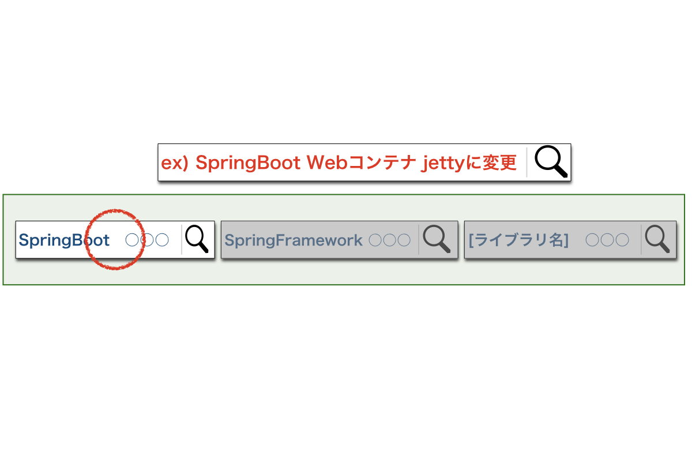
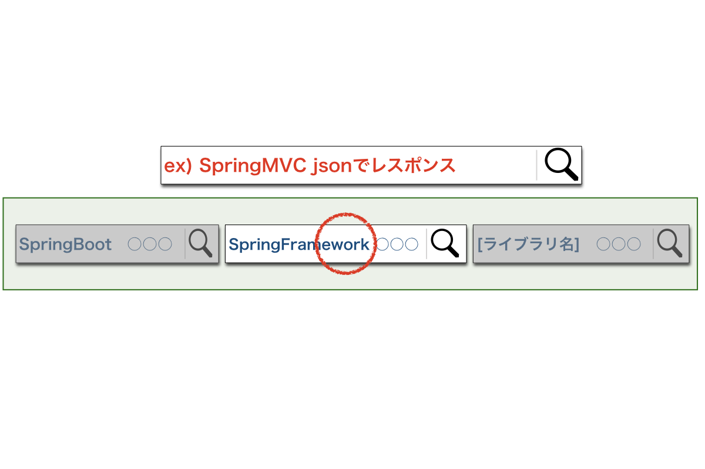
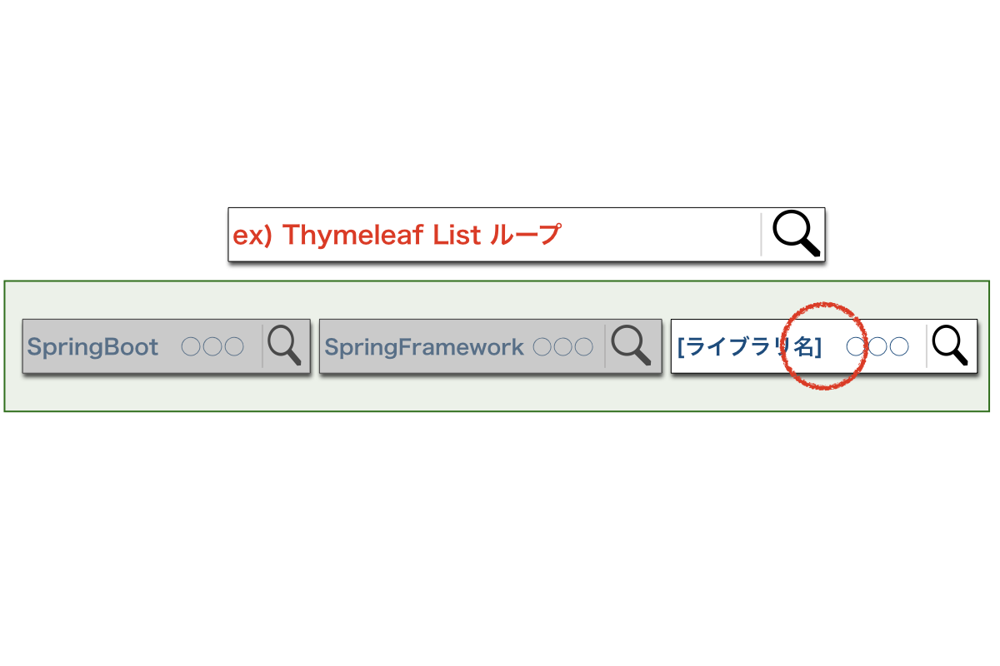
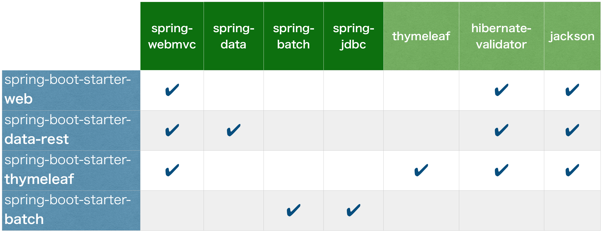
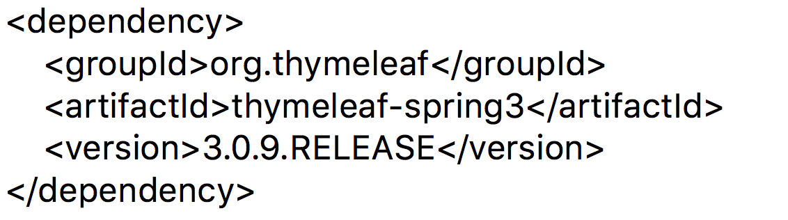

情報検索のコツ!
多種多様なコンポーネントを擁するSpring
知りたい情報にたどり着きにくい!
これだけ。
ケーススタディ
Case1.
組み込みコンテナを
tomcatからjettyに変更する方法は？
Case1.
組み込みコンテナを
tomcatからjettyに変更する方法は？
Case2.
webアプリケーションのレスポンスをjsonで返すには？
Case2.
webアプリケーションのレスポンスを
jsonで返すには？
Case3.
ThymeleafでListをループしたい
Case3.
ThymeleafでListをループしたい
Springにおいては、
今知りたい情報が「どの部分の機能なのか」
を正しく把握することで
格段に情報検索がスピードアップする！
Starterを使いこなそう！
Starterとは（おさらい）
主な依存ライブラリを一括提供してくれる
SpringBootの機能
(実体はpomファイル)
Starterの種類
主なStarterと依存ライブラリ
ケーススタディ
Case1.
spring-boot-starter-web を使って開発を開始
テンプレートエンジンとしてthymeleafを導入する必要が出てきた為
pomファイルにthymeleafの依存関係を追加して利用した
NO!
➜spring-boot-starter-thymeleaf を使おう
Case2.
spring-boot-starter-web を使ってRestAPIアプリケーションを開発している
NO!
➜spring-boot-starter-data-rest を使おう
SpringBoot環境でアプリケーション開発する際は
まずStarterの選定・精査から始めよう！
でも・・・
Starterで入る依存関係を
どうやって調べればいいの？
Starterの依存関係を調べる方法２.
Maven dependency:tree コマンドを使って自分で調べる!
ご清聴
ありがとうございました！